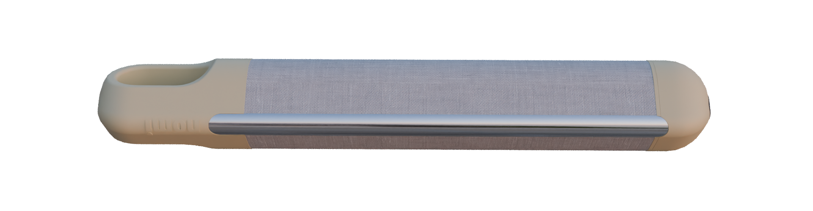
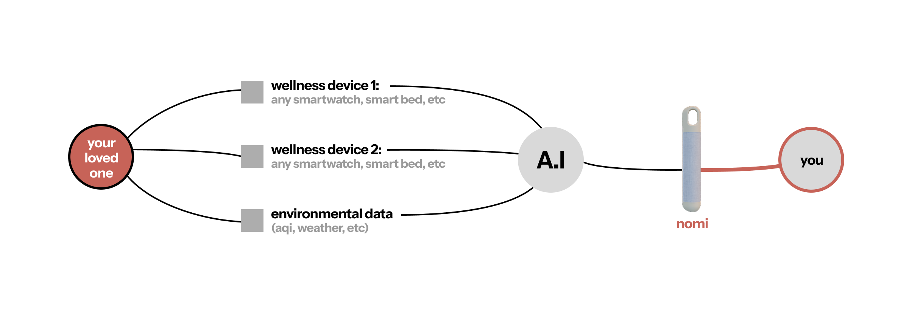

nomi
For those who care
Nomi is a non-medical companion that helps you stay
connected to the wellbeing of someone you care about.

Like carrying your loved
one with you
Our mission is to build better tools for seniors and their families to stay connected and cared for. Nomi is a companion device that provides peace of mind through gentle, non-intrusive wellness check-ins and vital signs.
Why Nomi Works
Learn patterns over time
Nomi quietly gets to know your daily rhythms and establishes what changes are natural and subtle—without needing to track moments.
Interprets many signals into one sense
Nomi quietly brings together different signals and turns them into one simple sense of how someone is doing.
Surfaces only what matters
Nomi stays in the background and only brings things forward when they’re worth your attention—keeping noise and worry to a minimum.
How it Works
real people. real stories
— Ananya
— Rohit & Meera

— Sunita